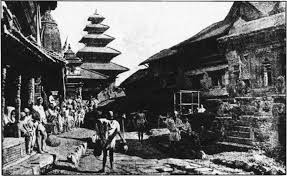
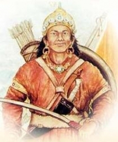

Pre-history of Nepal

The earliest inhabitants of modern Nepal and adjoining areas are believed to be
people from the Indus Valley civilization.
By 4000 BCE, the Tibeto-Burmese people had reached Nepal either
directly across the Himalayas from Tibet or via Myanmar and north-east India or both.
By the late Vedic period, Nepal was being mentioned in various Hindu texts, such as the
late Vedic Atharvaveda Pariśiṣṭa and in the post-Vedic Atharvashirsha Upanishad.
The Gopal Bansa was the oldest dynasty to be mentioned in various texts as the earliest
rulers of the central Himalayan kingdom known by the name 'Nepal'.
The Gopalas were followed by Kiratas who ruled for over 16 centuries by some accounts.
According to the Mahabharata, the then Kirata king went to take part in the Battle of Kurukshetra. In the south-eastern region, Janakpurdham was the capital of the prosperous kingdom
of Videha or Mithila, that extended down to the Ganges, and home to King Janaka and his daughter, Sita.
Kirat Dynasty

The context of Kirat Dynasty ruling in Nepal before Licchavi dynasty and after Mahispal
(Ahir) dynasty are depicted in different manuscripts. Delineating the area between the
Sun Koshi and Tama Koshi rivers as their native land, the list of Kirati kings is also
given in the Gopal genealogy. By defeating the last king of the Avir dynasty Bhuwan Singh
in a battle, Kirati King Yalung or Yalamber had taken the regime of the valley under
his control. In Hindu mythological perspective, this event is believed to have taken place
in the final phase of Dvapara Yuga or initial phase of Kali Yuga or around the 6th century BC.
Descriptions of 32, 28 and 29 Kirati kings are found according to the Gopal genealogy,
language-genealogy and Wright genealogy respectively.
By means of the notices contained in the classics of the East and West, the Kiranti people were
living in their present whereabouts for the last 2000 to 2500 years, with an extensive dominion
, possibly reaching at one time to the delta of the Ganges.
Gopal Dynasty

The kings of the Lichhavi dynasty (originally from Vaishali in modern-day India)
ruled what is the Kathmandu valley in modern-day Nepal after the Kirats.
It is mentioned in some genealogies and Puranas that the "Suryavansi Kshetriyas had established
a new regime by defeating the Kirats". The Pashupati Purana mentions that "the masters of
Vaishali established their own regime by confiding Kiratis with sweet words and
defeating them in war". Similar contexts can be found in 'Himbatkhanda', which also
mentions that "the masters of Vaishali had started ruling in Nepal by defeating Kirats".
Different genealogies state different names of the last Kirati king. According to the
Gopal genealogy, the Lichhavis established their rule in Nepal by defeating the last Kirati
King 'Khigu', 'Galiz' according to the language-genealogy and 'Gasti' according to Wright
genealogy.In 641, Songtsen Gampo of the Tibetan Empire sends Narendradeva back to Licchavi
with an army and subjugates Nepal. Parts of Nepal and Licchavi was later under the direct
influences of the Tibetan empire.